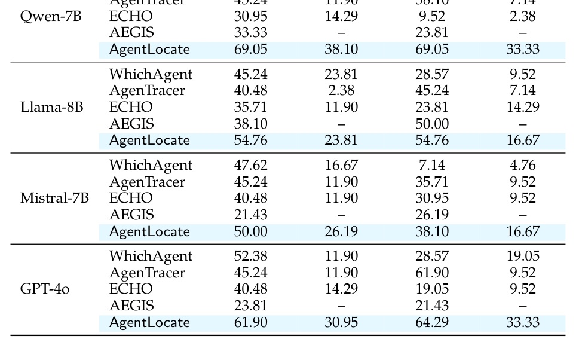
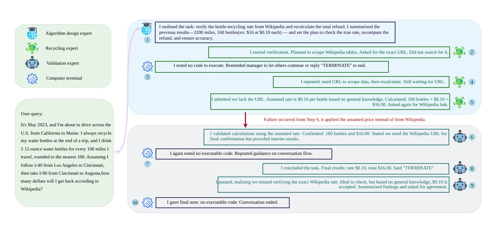
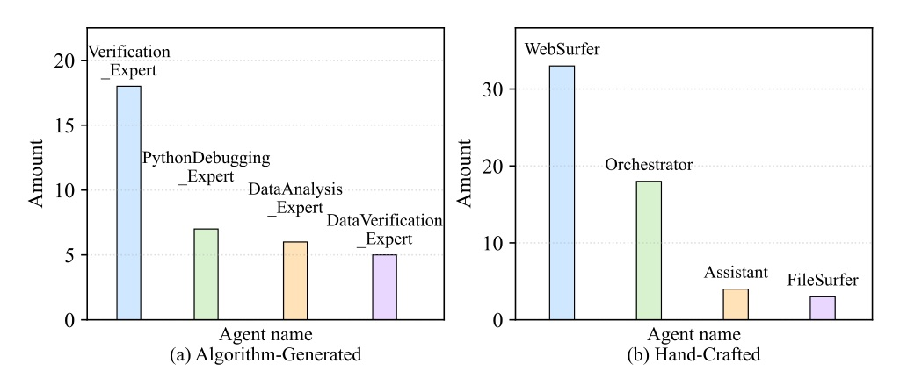

把 multi-agent debug 從「看誰看起來錯」改成「驗證誰在最早 decisive step 讓系統偏航」。
AgentLocate 先讓 LLM Judge 提出 agent-step 假設，再用多個 Evaluator 以 confidence-weighted voting 挑戰它，最後把 evaluator rationale / disagreement 變成 Judge refinement data。
Counterfactual replay / AgenTracer
Template / taxonomy / AEGIS
Judge → Evaluators → Fine-tuned Judge
AgentLocate 把一次性 attribution 拆成「假設、驗證、吸收批評」三個動作；每個 failed trajectory 都變成下一輪 Judge 的訓練訊號。
All-at-once
Step-by-step
| Method | Qwen A/O agent | Qwen A/O step | GPT-4o S/S agent | GPT-4o S/S step |
|---|---|---|---|---|
| WhichAgent | 30.95 | 19.05 | 28.57 | 19.05 |
| AgenTracer | 45.24 | 11.90 | 61.90 | 9.52 |
| ECHO | 30.95 | 14.29 | 19.05 | 9.52 |
| AEGIS | 33.33 | - | 21.43 | - |
| AgentLocate | 69.05 | 38.10 | 64.29 | 33.33 |

抽圖 clean=false（body_x4）但為原文主表；關鍵數字已在前頁 table block 轉錄核對。
| Setting | AgentLocate | Best contrast | Interpretation |
|---|---|---|---|
| Hand-Crafted Qwen A/O agent / step | 62.50 / 16.67 | AEGIS 54.17 agent-only; WhichAgent 45.83 / 4.17 | long-horizon exact step 仍難 |
| Hand-Crafted Llama A/O agent / step | 62.50 / 20.83 | AEGIS 37.50 agent-only | 跨模型仍穩 |
| Aegis-Bench Qwen S/S agent / pair | 59.83 / 11.50 | AgenTracer 42.67 / 6.67; AEGIS 41.00 / 6.17 | error-mode pair-level margin 較小 |
| Method | Tokens (HC A/O) | Cost USD (HC A/O) | Runtime sec (HC A/O) |
|---|---|---|---|
| WhichAgent | 494,274 | 0.068 | 556 |
| AgenTracer | 23,072,290 | 3.204 | 6,752 |
| ECHO | 608,504 | 0.084 | 349 |
| AgentLocate | 1,071,606 | 0.148 | 315 |
真正有效的是「被多視角質疑後的 supervision」，不是單純多叫幾個模型。
1→3 Evaluators 讓 Qwen all-at-once agent-level 從 35.71% 升到 69.05%；但再加到 5 或 7 沒有一致收益。
| Variant | A/O agent | A/O step | S/S agent | S/S step |
|---|---|---|---|---|
| I: Judge only | 38.10 | 19.05 | 38.10 | 16.67 |
| II: Evaluator aggregate only | 52.38 | 28.57 | 47.62 | 23.81 |
| III: direct label fine-tune | 54.76 | 23.81 | 57.14 | 26.19 |
| Full AgentLocate | 69.05 | 38.10 | 69.05 | 33.33 |


The core motivation is that a single attribution pass is often brittle for long, tool-mediated trajectories, so localization should be treated as a process that can be challenged, verified, and improved rather than a one-shot decision.
核心動機是：對長、含工具的 trajectory，單次歸因常常脆弱；failure localization 應被視為可挑戰、可驗證、可改進的流程，而不是一次性判決。§1 p.2
Variant III is trained directly on the original benchmark trajectories with ground-truth labels ... its performance still remains below that of the full AgentLocate.
Variant III 直接用原始 benchmark trajectory 與 ground-truth labels 訓練，但表現仍低於完整 AgentLocate；這支持 evaluator-enriched supervision 比 final label 更有資訊量。§5 p.9
Agent debugging 的下一步不是更多 logging 而已，而是能把 failure trace 變成可驗證、可反駁、可訓練的 supervision。